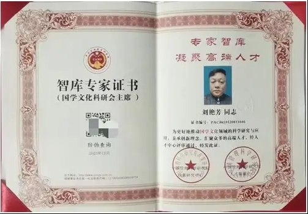
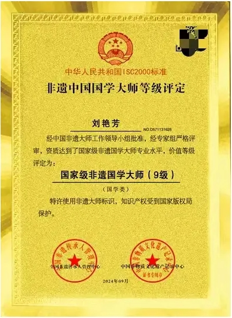
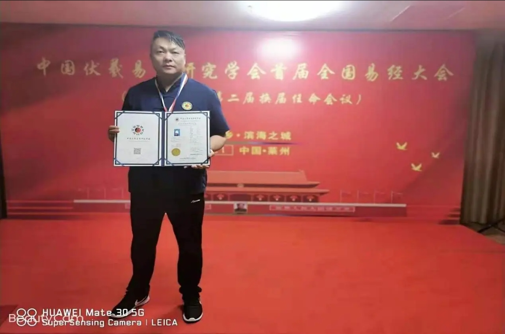

[搜狐网]非遗国学大师刘艳芳
刘艳芳老师祖籍湖北武汉。出生在一个风景秀丽的自然村落，坐落于久负盛名的龙须河畔、云雾山下。此地历史悠久，人文底蕴深厚。附近有两处省级文化遗址：汉代古城址——作京城遗址和明代石寨——龙王尖遗址。自古以来，钟灵毓秀，人杰地灵。
刘老师自幼生长在家风醇厚、家学颇深的三代风水世家，从小喜爱琴棋书画，善于思考探究，尤其对家传风水术及周易预测、命理学有浓厚的学习兴趣，显示出与年龄不符的悟性与天赋。幼承祖训，深得家传，每日如饥似渴地学习《易经》和堪舆术，见解不凡。
长大后，刘老师不仅认真研读各种风水经典，博采众家之长，不断丰富自己的专业知识；同时常年在外寻师访友，走遍大江南北，虚心向前辈名家请教，诚恳与同行切磋，交流心得感悟，提高技艺水平，得到了业界广泛赞誉。
在多年的学习和实践基础上，刘老师坚定了弘扬中华优秀传统文化的信念，成为一名执着的文化传播者和播火人。无论是在家乡还是外地，刘老师都不厌其烦地向左邻右舍、亲朋好友及相关居民宣传讲解风水学知识，破除某些人存在的对风水学的误解，帮助更多人消除封建迷信思想，让他们了解热爱中国传统文化，增强作为一个中国人应有的志气、底气、骨气，从而自觉坚定文化自信。同时他还受邀为多个省份众多个人和企业起名设计，趋利避害，促进了个人健康水平和企业效益的提高。另外，刘老师还招收多名弟子登堂入室，亲自传道授业解惑，培养了一批又一批有志于弘扬国学的年轻风水师，传承了中华文化，体现了高尚的责任担当。
深厚的文化功底、扎实的专业技能、谦逊的处世之道为刘老师赢得了良好的社会声誉。但他没有沾沾自喜，没有故步自封，而是以只争朝夕的状态忘我地投身到工作中。对于传统风水术，他没有盲目照搬照抄，而是取其精华，去其糟粕，坚持古为今用，守正创新。他另辟蹊径，总结出了一套自己独创的现代实用风水术，把祖传风水法术与现代科技相结合，用现代科技赋能传统风水术，让传统文化得以传承与光大；他把风水理论与生态文明建设相结合，契合了绿色发展的新发展理念；他把风水理论与乡村建设相结合，体现了人和自然的和谐统一，有力促进了乡村振兴战略的实施；他把风水理论与城市楼盘布局相结合，实现了宜业宜居宜商，彰显了“天人合一”的中国哲学精髓和灵动适用的东方美学思想，影响深远。
刘艳芳老师在易学探索研究中担任以下职务：
刘氏易学风水传承人；
国家级非遗国学大师（9）级；
易术风水测评（聚缘轩）创始人；
中国伏羲易学研究学会总会荣誉会长；
世界非物质文化遗产研究院特邀院士；
国学文化科研会主席。
2024年9月经中国非遗大师工作领导小批准，经专家组严格评审，资质达到了国家级非遗国学大师专业水平，价值等级评定为：国家级非遗国学大师（9）级，特许使用非遗大师标识，知识产权受到国家版权局保护。
个人荣誉：
国家一级建筑风水师 ；
中国金牌风水师；
中国高级命理师；
中国高级风水师；
中国金牌择日师；
中国金牌起名师；
华夏堪舆寻龙名家；
中国周易文化权威专家；
中国最具影响力易学名师；
文王易学文化荣誉会长；
文王易学文化易学高级讲师；
湖北省武汉市周易研究中心主任；
2020年中国十大杰出预测学人物；
2021年中国十大杰出风水学人物。
2017年获得“中国高级风水策划师”职称,“中国周易文化先进工作导师”职称, “中国周易大师荣誉称号”职称；
2019年3月获得“当代易学大师奖”；
2019年6月被华夏周易文化行业授予:“华夏风水学泰斗”终身成就荣誉称号；
2019年7月被文王易学文化聘为“易学高级讲师”,任期十年；
2019年7月签约山东文王易学文化传媒有限公司“御用风水师”；
2019年8月被评为“中国十大杰出预测学人物”；
2020年4月荣获“中华风水金罗盘奖”；
2020年7月荣获“中国十大杰出风水学人物”；
2021年1月荣获”国际华夏易学专家”称号 ；
2021年5月荣获“中国周易大师”证书；
2023年获得中国管理科学研究院“智库专家”证书（国学文化科研会主席）；世界非物质文化遗产研究院特邀院士。
《周易》曰：“天行健，君子以自强不息；地势坤，君子以厚德载物”。刘艳芳老师正以饱满的热情和青春的活力，坚持以习近平新时代中国特色社会主义思想为指导，以弘扬中华优秀传统文化为己任，造福桑梓，播惠四方，孜孜以求，奋斗不辍，不断书写着中华风水名家的崭新篇章！
本文来源：搜狐网
原文地址：非遗国学大师刘艳芳
原文地址：非遗国学大师刘艳芳